AI 最新资讯每日播报 · 逐步记录
Skill 不是一键生成 Agent 代码，而是 Cursor Agent 读 SKILL.md 后逐步执行的操作手册。步骤 1「下模板」也是 Skill 规定的创建方式，由 Agent 替你跑命令，不是另找文档手动做。修改 Agent 时每个文件都有改前/改后、原因、截图。Demo：/Users/bitmart/work/codes/tmp/ai-daily-news
总流程
login + install Skill
触发 Skill
创建 + 跑通
8 个文件
安装 standalone-repo-agent Skill
npx https://plugin-marketplace.bmaws-infra.com/api/cli login
npx https://plugin-marketplace.bmaws-infra.com/api/cli install --tool cursor standalone-repo-agent
npx https://plugin-marketplace.bmaws-infra.com/api/cli listA1 · Web UI 创建 PAT

A2 · 终端 login
~/.cc-marketplace/config.json
A3 · install + list
~/.cursor/skills/standalone-repo-agent/SKILL.md
Cursor 触发 Skill
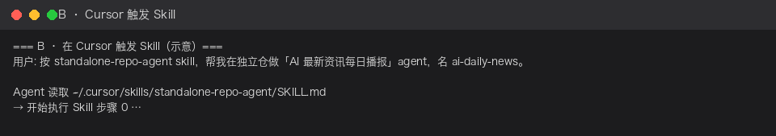
环境检查

创建 Agent（Skill 步骤 1 · Agent 执行）
ai-daily-news 骨架。builder.py / core.py / CLI 的标准独立仓，无需从零搭。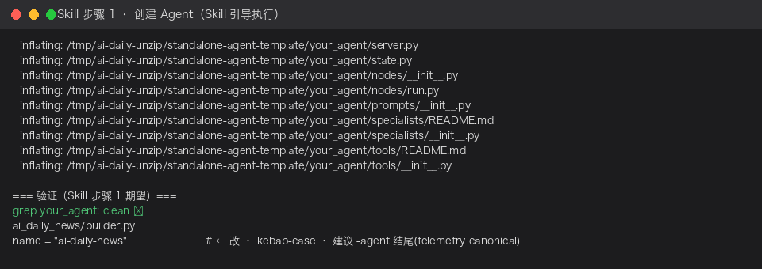
Nexus 凭据
uv sync 从 Nexus 拉 ai-trust-toolkit-bom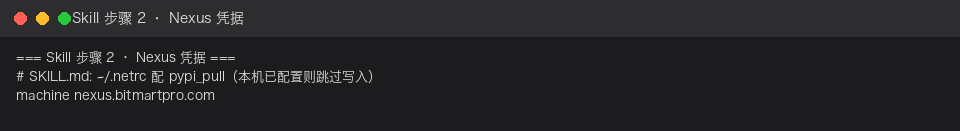
安装 + 首次跑通
success=True
此时还是模板 run_node 回声 · 输出 (echo · 未接 LLM)你好
修改 Agent · 逐文件记录（Skill 步骤 4-7）
修改顺序（建议按此顺序，避免 import 报错）: ① prompts/__init__.py ② state.py ③ nodes/fetch.py ← 新建 ④ nodes/broadcast.py ← 新建 ⑤ nodes/__init__.py ⑥ builder.py ⑦ core.py ← Skill 步骤 5 telemetry ⑧ tests/test_smoke.py ← Skill 步骤 7
4-1 · prompts/__init__.py
ai_daily_news/prompts/__init__.pybroadcast_node 引用 BROADCAST_SYSTEM，约束输出 📢 标题 + 今日要闻 + 值得跟进 + 展望。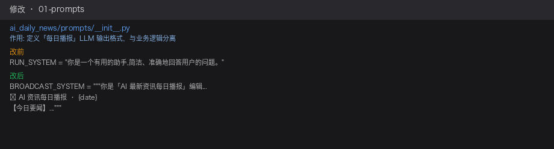
改前
RUN_SYSTEM = "你是一个有用的助手,简洁、准确地回答用户的问题。"改后
BROADCAST_SYSTEM = """你是「AI 最新资讯每日播报」编辑...
📢 AI 资讯每日播报 · {date}
【今日要闻】1. ... 2. ...
【值得跟进】- ...
【一句话展望】..."""4-2 · state.py
ai_daily_news/state.pyfetch_node 写 headlines_text · broadcast_node 读它生成 output。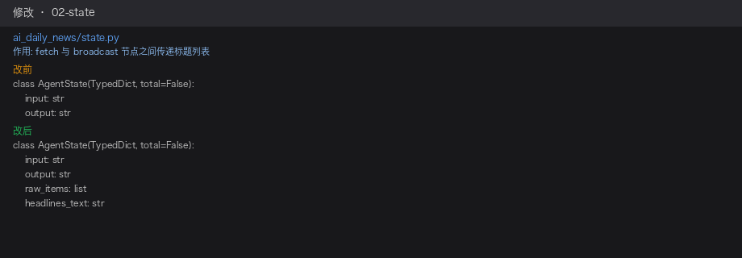
class AgentState(TypedDict, total=False):
input: str
output: str
raw_items: list # fetch 写入
headlines_text: str # fetch → broadcast深读 · 每个字段的作用
AgentState 是 LangGraph 全图共享的数据契约；各节点 return 的字段会合并进同一份 state（不是整份替换）。total=False 表示字段均可选，随节点逐步补齐。
| 字段 | 谁写入 | 谁读取 | 作用 |
|---|---|---|---|
input | CLI / 调用方 | broadcast | 可选「日期提示」，如 "2026-07-13"，用于播报标题里的日期；不是资讯正文（资讯来自 RSS） |
output | broadcast | CLI、core | 最终交付物：📢 每日播报正文；CLI 打印 final_state["output"] |
raw_items | fetch | （预留） | 结构化列表 [{"title","link"}, ...]，便于调试、存历史、扩展；当前 broadcast 不直接读 |
headlines_text | fetch | broadcast、core、测试 | 标题列表的 multiline 文本，喂给 LLM；core 用它判 fetch 是否跑过 |
数据流:
CLI {"input":"2026-07-13"}
→ fetch 写 raw_items + headlines_text
→ broadcast 读 input + headlines_text → 写 output
→ core 读 output + headlines_text 判 success
4-3 · nodes/fetch.py 【新建文件】
ai_daily_news/nodes/fetch.pyhnrss.org?q=AI · 失败用 FALLBACK · 返回 headlines_text 供下一节点。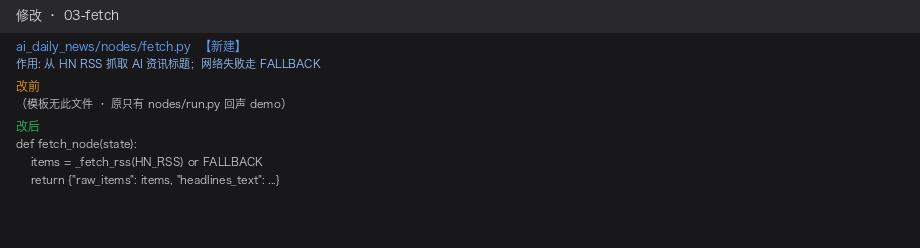
def fetch_node(state: AgentState) -> AgentState:
items = _fetch_rss(HN_RSS) or FALLBACK
headlines_text = "\n".join(f"- {x['title']}" for x in items[:8])
return {"raw_items": items, "headlines_text": headlines_text}4-4 · nodes/broadcast.py 【新建文件】
ai_daily_news/nodes/broadcast.pyget_llm("sonnet") + BROADCAST_SYSTEM → 写回 output；无 key 时 echo 结构化兜底。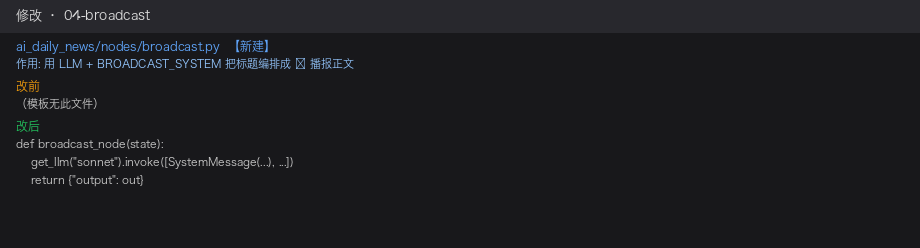
def broadcast_node(state: AgentState) -> AgentState:
headlines = state.get("headlines_text", "")
# get_llm("sonnet").invoke([SystemMessage(BROADCAST_SYSTEM), ...])
return {"output": out}4-5 · nodes/__init__.py
ai_daily_news/nodes/__init__.pyfrom .nodes import fetch_node, broadcast_node 引用节点，必须导出。run_node 导出（run.py 可保留但不再接入图）。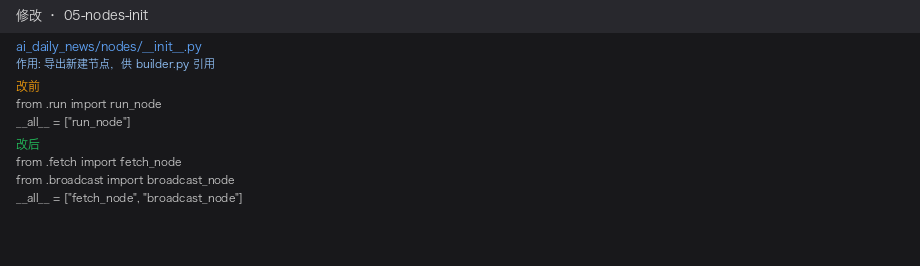
from .broadcast import broadcast_node
from .fetch import fetch_node
__all__ = ["fetch_node", "broadcast_node"]深读 · __init__.py 与 run.py
nodes/__init__.py 是包的对外出口：让 builder.py 写 from .nodes import fetch_node, broadcast_node，而不必 from .nodes.fetch import ...。
| 改前（模板） | 改后 | |
|---|---|---|
| 导出 | run_node | fetch_node + broadcast_node |
| builder | run → END | fetch → broadcast → END |
还需要 run.py 吗？ 运行时不需要。改完后 builder.py 不再 import run_node，run.py 是模板遗留；且仍引用已删的 RUN_SYSTEM，手动 import 会报错。建议删除 run.py 或保留但不放入 __all__。
以后加第三节点：新建 nodes/xxx.py → 在 __init__.py export → 在 builder.py add_node / add_edge。
4-6 · builder.py（包根 · 不在 nodes/）
ai_daily_news/builder.pyrun→END 改为两节点流水线。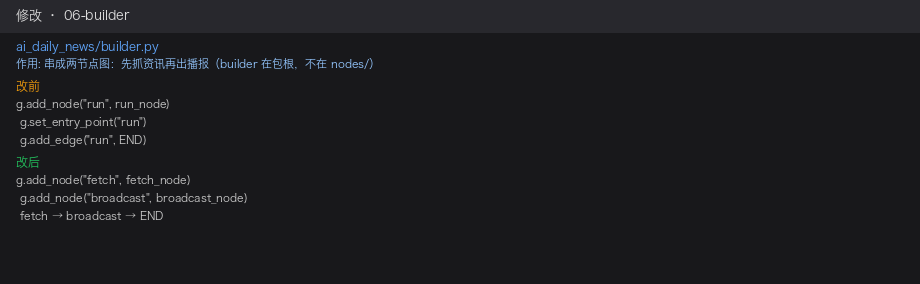
def build_graph() -> Any:
from langgraph.graph import END, StateGraph
g = StateGraph(AgentState)
g.add_node("fetch", fetch_node)
g.add_node("broadcast", broadcast_node)
g.set_entry_point("fetch")
g.add_edge("fetch", "broadcast")
g.add_edge("broadcast", END)
return g.compile()深读 · build_graph() 逐行
| 代码 | 含义 |
|---|---|
def build_graph() -> Any | 工厂函数；返回编译后可 .invoke() 的 graph |
from langgraph.graph import END, StateGraph | 延迟 import；StateGraph 建图，END 是结束哨兵 |
g = StateGraph(AgentState) | 指定 state 类型；各节点读写同一份 state 并 merge 字段 |
g.add_node("fetch", fetch_node) | 注册节点：图内名 "fetch" → 函数 fetch_node |
g.add_node("broadcast", broadcast_node) | 同上，第二个业务节点 |
g.set_entry_point("fetch") | 入口：invoke 后第一个跑 fetch（不是 broadcast） |
g.add_edge("fetch", "broadcast") | fetch 完成后自动进入 broadcast；headlines_text 在此传递 |
g.add_edge("broadcast", END) | broadcast 完成后图结束，返回 final state |
return g.compile() | 编译蓝图为可执行 graph；core.py / 测试调 .invoke() |
执行顺序:
invoke({"input":"..."}) → fetch → broadcast → END → 返回含 output 的 state
5 · core.py（Skill 步骤 5 · telemetry）
ai_daily_news/core.pyrecord_effect("briefing_sent", 1) · 成功判定需同时有 output 和 headlines_text。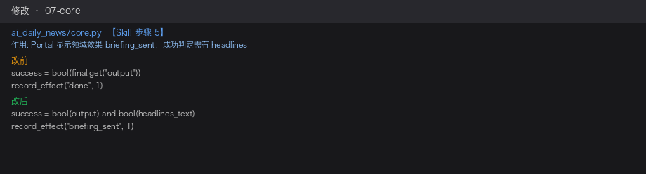
success = bool(final.get("output")) and bool(final.get("headlines_text"))
record_effect("briefing_sent", 1)深读 · core.py 结构与逐段说明
core.py 是 CLI / Pod 共用的跑图 + 包装结果 + 上报 Portal 入口，不直接写业务逻辑。
RunResult（dataclass）：success 是否业务成功 · status ok/failsafe · duration_ms 耗时 · final_state 图跑完后的完整 state（CLI 从这里取 output）。
run_agent(...) 主流程：
| 步骤 | 代码 | 说明 |
|---|---|---|
| 1 | graph = build_graph() | 拿到 fetch→broadcast 编译图 |
| 2 | final = graph.invoke(initial_state, ...) | 真正跑图；recursion_limit: 50 防死循环 |
| 3 | success = output and headlines_text | 本 Demo 改动：成功 = 有播报 + fetch 跑过（模板只判 output） |
| 4 | 组装 RunResult | 含耗时、final_state |
| 5 | if telemetry: _report(...) | 默认上报；--no-telemetry 或测试可关 |
_report(...)：bind_effect() 上下文 · 成功时 record_effect("briefing_sent", 1)（模板是 "done"）· push_invoke_metrics 推调用 KPI · 整个 try 包上报，失败静默不阻断业务。
调用链:
cli run "..." → run_agent({"input":...}) → build_graph().invoke() → 打印 final_state["output"]
7 · tests/test_smoke.py（Skill 步骤 7）
tests/test_smoke.pyheadlines_text 存在 · CI 不依赖外网 LLM。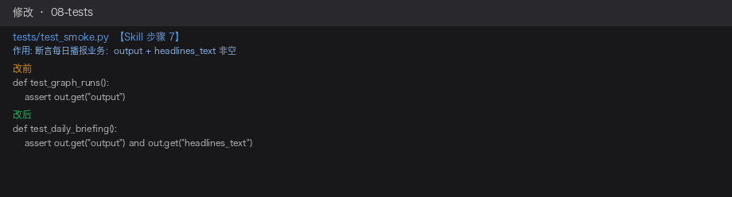
def test_daily_briefing():
out = build_graph().invoke({"input": "2026-07-13"})
assert out.get("output") and out.get("headlines_text")测试验证（全部改完后）
uv run ai-daily-news run "2026-07-13"
uv run --extra test pytest -v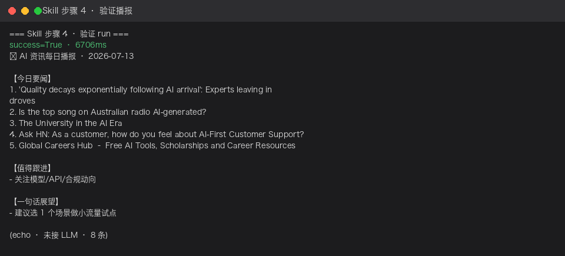
截图 · 📢 每日播报 · 8 条 RSS · success=True